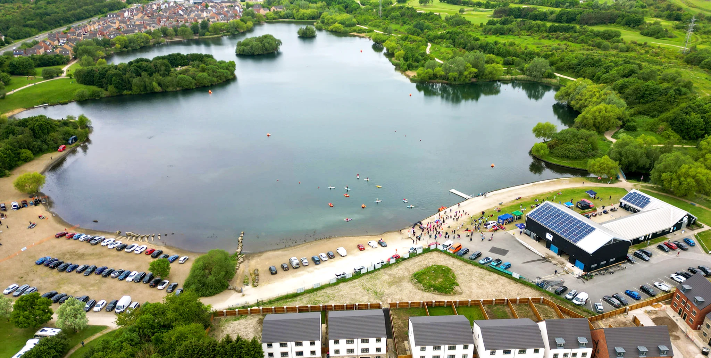

Manvers Lake is in a suburb of Wath upon Dearne in the Metropolitan Borough of Rotherham in South Yorkshire, England. Wath upon Dearne lies across the border with the Metropolitan Borough of Doncaster, whilst Mexborough is part of Doncaster. It is situated between Mexborough and Wath upon Dearne, not far from Swinton.
Ever fancied trying open water dipping? The benefits are of open water swimming are fabulous! To name a few: